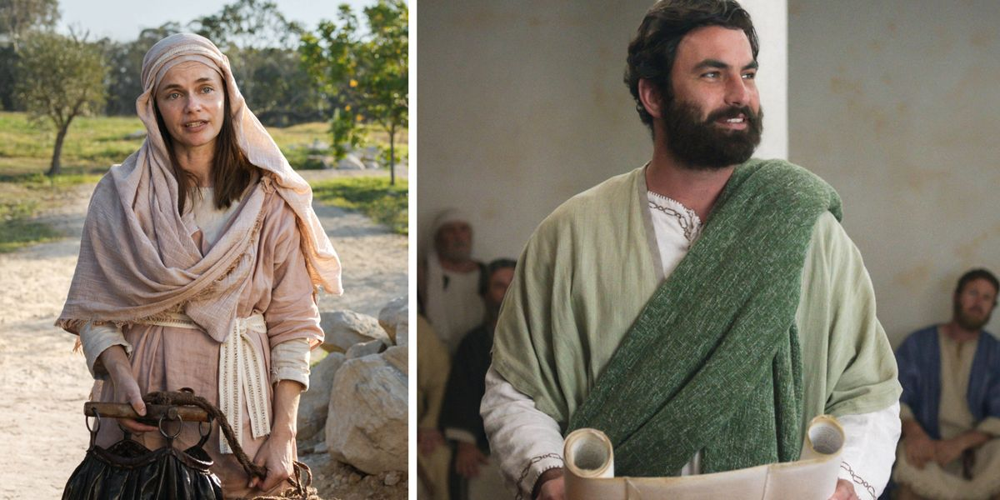

Domingo
Cor do tema:
A-
A+
Limpar Cache
“Adorarão o Pai com espírito e verdade” —
João 4:23
Manhã
9:20
Vídeo musical
9:30
Cântico 140 e oração
9:40 SÉRIE DE DISCURSOS:
Lições das palavras de Jesus
‘Nascer da água e do espírito’
(João 3:3, 5)
“Nenhum homem subiu ao céu”
(João 3:13)
‘Chegue-se à luz’
(João 3:19-21)
‘Eu sou ele’
(João 4:25, 26)
“Meu alimento”
(João 4:34)
‘Os campos estão brancos para a colheita’
(João 4:35)
11:05
Cântico 37 e anúncios
11:15 DISCURSO PARA O PÚBLICO:
Você adora o que conhece?
(João 4:20-24)
11:45
Resumo de A Sentinela
12:15
Cântico 84 e intervalo
Tarde
1:35
Vídeo musical
1:45
Cântico 77
1:50 VÍDEO PRINCIPAL:
A História e o Ministério de Jesus: Episódio 3 — ‘Eu Sou Ele’
(João 3:1–4:54; Mateus 4:12-20; Marcos 1:19, 20; Lucas 4:16–5:11)
2:35
Cântico 20 e anúncios
2:45
O que você aprendeu?
2:55
Continue no grande templo espiritual de Jeová!
(Hebreus 10:21-25; 13:15, 16; 1 Pedro 1:14-16; 2:21)
3:45
Novo cântico e oração final
Anterior
Próximo